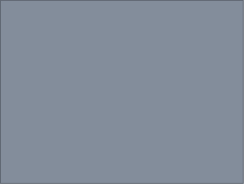

OUTLINE EXAMPLE

Extrasensory perception
•Definition: means of
perceiving without use of
sense organs.
•Three kinds
•Telepathy: sending messages
•Clairvoyance: forecasting the future
•Psychokinesis: perceiving events external
to situation
to situation
•Current status
•No current research to support or refute
•Few psychologists say impossible
•Door open to future
Title
Main Point

Sub-points